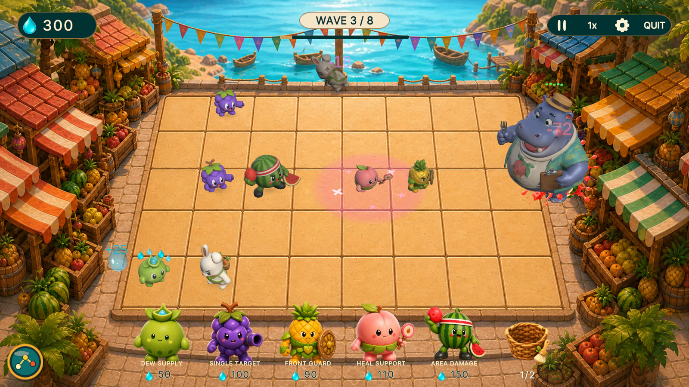
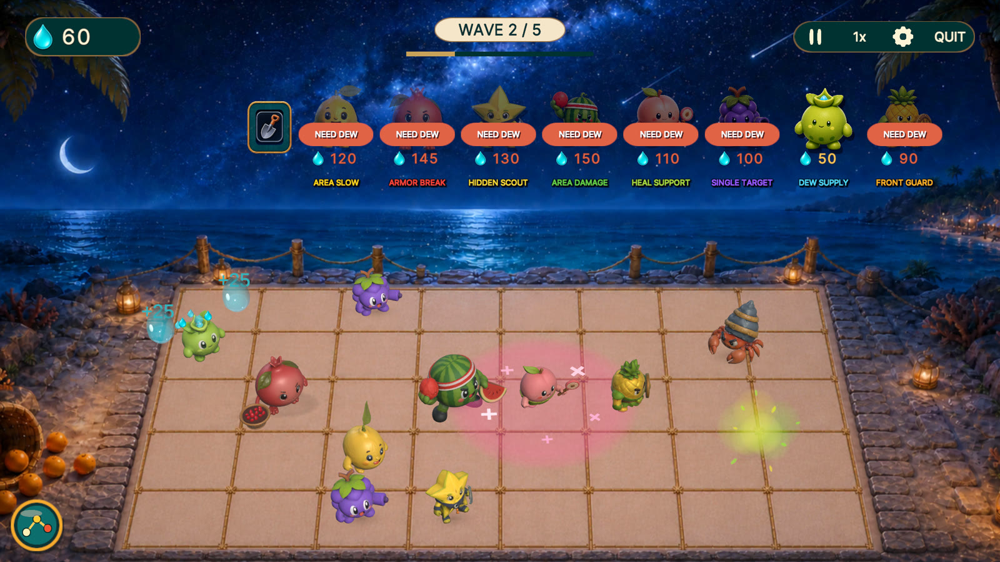
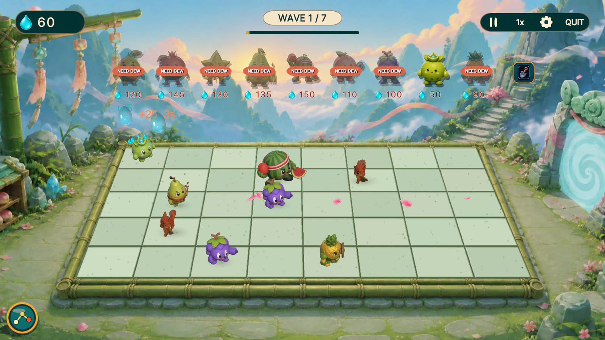

GRÁTIS PARA IPHONE, IPAD E ANDROID NO BRASIL
O chefe avança pela direita.
Qual rota você salva?
Defenda cinco rotas com heróis-frutas em Sunny Market, Moonlit Coast e Cloudcrest. Coloque um defensor na frente, cure sua equipe ou concentre o ataque antes que o chefe passe.
- Offline após a instalação
- Sem anúncios
- Sem compras no app



Veja as cinco rotas em ação
11,9 segundos de jogo real nos três mundos. O vídeo não tem som e mostra a interface completa em inglês.
Pronto para defender sua primeira rota?
Escolha a loja do seu aparelho. As imagens e o vídeo mostram jogo real com a interface em inglês.
Confira a disponibilidade e a compatibilidade do seu aparelho em cada loja.